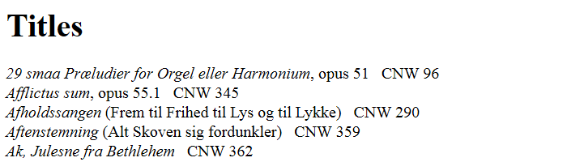
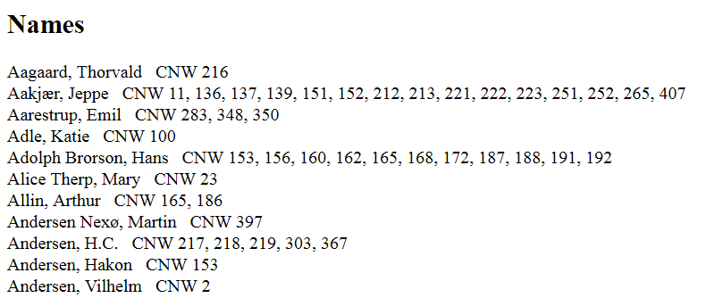
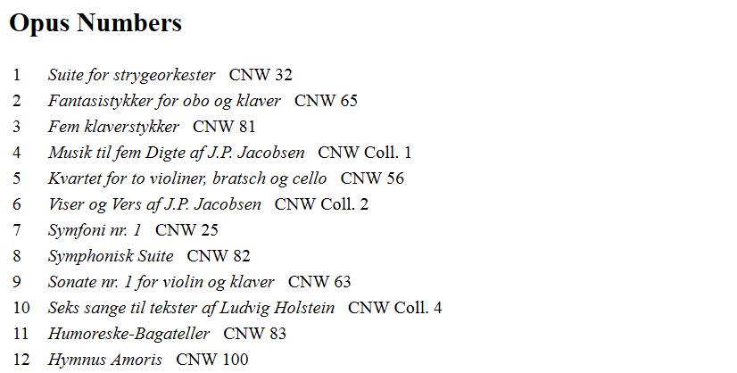
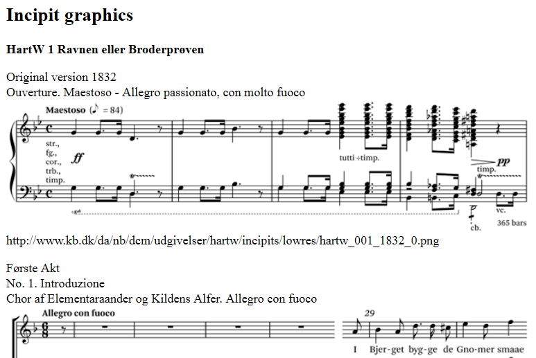

Tools for generating indexes
MerMEId offers tools to help you generating indexes for printed catalogues.
All of the tools described below are located in the 'tools' folder of your eXist database. In order to generate any output they need a query parameter named 'c' added to the URL to specify which file collection to generate an index for (for instance: http://my_server_name.org/storage/tools/title_index?c=CNW ).
The lists generated are meant as a starting point for an index. Most likely you will need to make manual corrections.
If you want to change the default formatting such as the use of italics, you may want to change the script accordingly.
You may be prompted for eXist database administrator credentials to use these tools.
The indexes generated by these scripts are intended to be copied directly from the browser and pasted into your word processing software for final correction and formatting.
Title index
To generate a simple list of titles, alphabetically ordered, use the title_index.xq script located in the 'tools' folder of your eXist database.
The script generates a list in two sections: First a list of main titles with subtitles and (in parentheses) alternative titles. Below that, it generates a list of alternative titles with main titles in parenthesis. If you want both to appear as a single index of titles, you will need to merge the two lists manually.

Index of names
The script name_index.xq produces a list of all names encoded as <persName> elements within the <sourceDesc> and <workDesc> elements. This restriction ensures that persons such as the encoder or project manager (usually encoded in <fileDesc>) are not included.

- Please note: The names index script is slow, as it needs to read through the entire database several times. If you experience a server timeout when running it, you may want to try a two-step approach instead. However, this solution involves editing one of the scripts on the server. First, use the script name_index_step1.xq to generate a list of all the persons found. This list is pasted into the source code of the second script (the code indicates where), name_index_step2.xq, which in turn searches for alle occurrences of each name on the list.
Index of text authors
The index of text authors, text_author_index.xq, is a just subset of the general index of names, only including the <persName> elements having @role='author'. This index is intended to list the authors of vocal text (lyrics) only; it does not include authors of documentary material or literature such as letters, articles and books, which MerMEId defines using the <author> element.
Index of opus numbers
The script opus_index.xq lists the titles of works having an identifier named 'Opus' at the 'Work' tab:

Index of item (source) locations
The script location_index.xq generates a list of the locations of
items (that is, manuscripts or specific copies of printed sources).
The script tries to resolve RISM sigla; locations not recognizable as RISM sigla are reproduced as written.
List of incipit graphics
For proofreading incipits added as graphics (images), a tool list_incipit_graphics.xq is available to output all graphics including the movement titles and file URLs. The script does not (yet) include incipits to be rendered at runtime. 